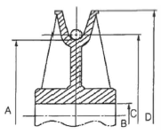
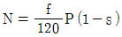
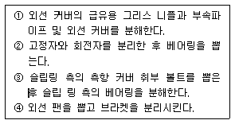
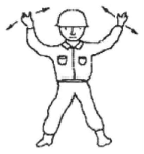

천장크레인운전기능사 (2009-07-12 기출문제)
1과목: 임의 구분
1. 다음 중 주행 제동용으로 주로 사용되는 브레이크는?
- 마그네틱 브레이크(Magnetic brake)
- 에디 커런트 브레이크(Eddy current brake)
- 오일 디스크 브레이크(Oil disk brake)
- 스피드 컨트롤 브레이크(Speed control brake)
(정답률: 50%)

2. 천장크레인용 고리걸이 훅의 안전계수는?
- 4이상
- 5이상
- 8이상
- 10이상
(정답률: 89%)
3. 다음 중 권상장치의 동력전달 순서로 맞는 것은?
- 전동기 → 기어 감속기 → 커플링 → 드럼 → 와이어로프 → 훅
- 전동기 → 커플링 → 드럼 → 기어 감속기 → 와이어로프 → 훅
- 전동기 → 커플링 → 기어 감속기 → 드럼 → 와이어로프 → 훅
- 전동기 → 기어 감속기 → 드럼 → 커플링 → 와이어로프 → 훅
(정답률: 53%)
4. 천장크레인의 주행차륜 직경의 마모는 원 치수의 몇 %가 사용한도인가?
- 원치수의 3%
- 원치수의 5%
- 원치수의 7%
- 원치수의 10%
(정답률: 24%)
5. 차륜 플랜지의 한쪽만 계속 레일과 접촉하여 마모되는 원인이 아닌 것은?
- 레일과 차륜의 직각도 불량
- 구동차륜과 종동차륜의 직경이 틀림
- 좌우 주행레일의 높이가 틀림
- 좌우 구동차륜의 직경차가 큼
(정답률: 81%)
6. 크레인용 훅(Hook) 또는 달기기구에 대한 설명으로 틀린 것은?
- 훅은 하중을 걸어 시험할 때 정격하중의 250%를 걸어 테스트한다.
- 국부마모는 원치수의 5% 이내이어야 한다.
- 훅의 균열시험은 자기 탐상 방법으로 실시할 수 있다.
- 훅 본체는 균열 또는 변형이 없어야 한다.
(정답률: 82%)
7. 산업안전보건법상 크레인 완성검사 시 적용하는 과부하방지장치의 하중시험 값으로 적합한 것은?
- 정격하중의 100% 하중
- 정격하중의 110% 하중
- 정격하중의 120% 하중
- 정격하중의 125% 하중
(정답률: 77%)
8. 천장크레인과 관련된 설명 중 틀린 것은?
- 휠베이스는 스팬 길이의 8배 이상이 되어야 한다.
- 크랩이란 횡행장치를 설치하여 양 거더 위에 설치된 레일위를 왕복 운동하는 대차이다.
- 시징은 와이어 직경의 3배 정도를 해야 한다.
- 천장크레인의 와이어 고정 시에 쐐기고정과 클립고정을 병용해서 사용하는 것이 좋다.
(정답률: 40%)
9. 드럼에 홈이 없는 경우 와이어로프가 감길 때의 후리트 각(Fleet angle)은 몇 도 이내로 해야 하는가?
- 2
- 4
- 6
- 8
(정답률: 50%)
10. 중추식 리미트스위치(Limit switch)의 사용처를 설명한 것으로 가장 적합한 것은?
- 주권에만 사용
- 권상장치에서 권상 시에 사용
- 권상장치에 주로 사용하나 필요에 따라 주, 횡행도 사용 가능
- 주, 횡행에 공통사용
(정답률: 43%)
11. 크레인 권상 브레이크의 제동 토크는 정격하중에 상당하는 하중을 걸고 권상 시 권상 토크의 몇 배 이상이어야 하는가?
- 1.5배
- 2배
- 2.5배
- 3배
(정답률: 64%)
12. 그림에서 로프 시브의 호칭지름은?

- A
- B
- C
- D
(정답률: 57%)
13. 다음 중에서 크레인 운전자격·면허·기능 또는 경험이 없어도 운전이 가능한 크레인은?
- 정격하중이 10톤인 지상 조작식 천장크레인
- 정격하중이 5톤인 조종석 부착 천장크레인
- 정격하중이 3톤인 조종석 부착 타워크레인
- 정격하중이 30톤인 조종석 부착 컨테이너 크레인
(정답률: 44%)
14. 천장크레인에서 주행레일 연결부 틈새는 얼마인가?
- 3㎜ 이상
- 3㎜ 이하
- 5㎜ 이하
- 5㎜ 이상
(정답률: 53%)
15. 다음 천장크레인 중 권하 속도가 빠를수록 좋은 것은?
- 원료장입 크레인
- 주기 크레인
- 강괴 크레인
- 담금질 크레인
(정답률: 86%)
16. 크레인의 안전장치로서 주행, 횡행 등 운동과 과행을 방지하기 위한 보호장치는?
- 전자 접촉기
- 리미트 스위치
- 오버로드 스위치
- 퓨즈
(정답률: 80%)
17. 천장크레인에서 스팬(Span)의 설명을 맞는 것은?
- 좌우 주행 차륜 중심 간의 거리를 말한다.
- 좌우 주행 레일 중심 간의 거리를 말한다.
- 좌우 횡행 레일 중심 간의 거리를 말한다.
- 좌우 횡행 차륜 중심 간의 거리를 말한다.
(정답률: 50%)
18. 다음 중 다이나믹 브레이크를 설명한 것으로 맞는 것은?
- 다이나믹 브레이크는 마그넷 브레이크, 스러스트 브레이크, 유압 브레이크가 있다.
- 구조가 간단하고 정격속도의 1/5의 안정된 저속도를 쉽게 얻을 수 있다.
- 다이나믹 제동방식은 운동에너지를 전기에너지로 변환시켜 이 전기에너지를 소모시켜 제어한다.
- 직류전자석으로 구성되어 있으며 직류 전원용으로 별도 전용 제어함이 필요하다.
(정답률: 44%)
19. 완충장치(Buffer)의 종류로서 알맞지 않은 것은?
- 유압 Buffer
- 고무 Buffer
- 강철 Buffer
- 스프링 Buffer
(정답률: 89%)
20. 전자 브레이크의 전자석 부분 과열 원인 중 틀린 것은?
- 철심이 완전히 흡착하지 않음
- 전원 전압의 강하
- 권선의 부분단락
- 브레이크 슈(Shoe)의 마모
(정답률: 58%)
2과목: 임의 구분
21. 두 축이 서로 교차할 때 사용되는 기어는?
- 평 기어
- 베벨 기어
- 헬리컬 기어
- 웜 기어
(정답률: 64%)
22. 플랜지형 플렉시블 커플링에는 무엇으로 체결되어 있는가?
- 아이 볼트
- 핀
- 리머 볼트
- 성크키
(정답률: 40%)
23. 천장크레인으로 물건을 운반할 때 주의할 점으로 틀린 것은?
- 경우에 따라서 정격하중 무게보다 약간 초과할 수 있다.
- 적재물이 떨어지지 않도록 한다.
- 로프의 안전여부를 점검한다.
- 운반 중 작업자의 위치에 주의한다.
(정답률: 88%)
24. 스프링 재료의 구비조건이 아닌 것은?
- 내식성이 클 것
- 크리프 한도가 높을 것
- 탄성한계가 높을 것
- 절연성이 풍부할 것
(정답률: 58%)
25. 전기 기기의 불꽃(Spark) 발생을 막기 위한 방법으로 틀린 것은?
- 스위치류의 개폐는 신속히 행한다.
- 스위치의 접촉면에 먼지나 이물질이 없도록 한다.
- 접촉면을 매끄럽게 유지시킨다.
- 가능한 교류보다 직류를 많이 사용한다.
(정답률: 74%)
26. 천장크레인으로 운반하고자 하는 경우 작업방법으로 틀린 것은?
- 매달 짐의 운반 시 높이는 최소 2m 이상 유지해야 한다.
- 운반경로는 부근의 기계나 시설 상황을 고려해서 정해야 한다.
- 신호는 어떠한 경우에도 한 사람의 신호에만 따른다.
- 부득이한 경우에는 사람 머리 위를 지나가도 무방하다.
(정답률: 93%)
27. 다음 중 전압의 단위로 맞는 것은?
- V
- A
- Ω
- W
(정답률: 64%)
28. 윤활유의 작용으로 틀린 것은?
- 냉각작용
- 방청작용
- 응력집중작용
- 밀봉작용
(정답률: 45%)
29. 축 방향으로 이동이 가능하고 가장 큰 동력을 전달 할 수 있는 것은?
- 성크 키
- 스플라인 키
- 새들 키
- 플렛 키
(정답률: 30%)
30. 관리의 보수에 관련된 사항 중 틀린 것은?
- 고장 발생이 많은 부품은 기계 부분에는 기어(Gear)이고, 전기부분의 고장으로는 전동기(Motor)이다.
- 일반적으로 전기회로를 차단할 때(off) 보다 연결할 때 (on)에 스파크(이상전압)가 많으므로 주의한다.
- 보전방법에는 예방보전과 사후보전이 있으며, 예방보전이란 고장이 일어날 것 같은 부분을 계획적으로 교환 수리하는 방법이다.
- 임시수리 중의 한 사항은 정기검사까지의 기간이 길 때 사용한도에 따라서 중간에 국부적으로 검사 수리하는 것이다.
(정답률: 42%)
31. 전동기 회전수를 구하는 계산식은? (단, N:회전수, f:주파수, P : 극수, s : slip)




(정답률: 48%)
32. 양축이 동일평면 내에 있고, 그 축선이 30° 이하의 각도로 교차하는 경우에 사용되는 축 이음으로서 축 조인트라고도하며, 양축단에 각각 요크(Yoke)를 부착하고, 이것을 십자형의 핀으로 자유로이 회전할 수 있도록 연결한 축 이음은?
- 플렉시블 커플링
- 자재이음
- 오울덤 커플링
- 고정축 이음
(정답률: 32%)
33. 권선의 변환수리를 행하였을 때 잘못해서 계자의 회전방향을 반대로 결선하면 역전될 위험이 있다. 이 경우 회로를 자동적으로 차단시키는 장치는?
- 칼날형 개폐기
- 타임 릴레이
- 역상 보호 계전기
- 무전압 보호장치
(정답률: 78%)
34. 옥외에 설치되어있는 주행 크레인은 순간 풍속이 얼마나 되면 이탈방지장치를 작동시켜야 하는가?
- 30m/s
- 20m/s
- 15m/s
- 10m/s
(정답률: 53%)
35. 구름베어링에서 금속음이 들릴 때의 추정 원인으로 틀린 것은?
- 과하중
- 회전부품의 접촉
- 베어링 조립 불량
- 윤활제의 과다
(정답률: 80%)
36. 천장크레인의 운전 전 점검사항으로 적당하지 않은 것은?
- 브레이크 라이닝의 마모정도
- 리미트 스위치의 작동여부
- 컨트롤러 접촉자의 접촉상태를 눈으로 직접 확인
- 권상용 감속기의 오일량
(정답률: 32%)
37. 다음은 전동기 분해순서를 열거한 것이다. 바르게 순서대로 열거한 항목은?

- ①-②-③-④
- ①-③-②-④
- ④-①-②-③
- ①-③-④-②
(정답률: 50%)
38. 전자접촉기의 개폐 불량 중 조정으로 가능한 것은?
- 접점의 마모
- 코일 직렬 저항단선
- 보조접점 접촉 불량
- 인터록 파손
(정답률: 56%)
39. 제어기(Controller)의 핸들이 무거운 경우의 고장 원인과 대책 중 틀린 것은?
- 베어링에 기름이 없으면, 베어링에 급유한다.
- 이물이 혼입되어 있으면, 점검하여 청소한다.
- 리턴 스프링이 열화 되어 있으면 스프링을 교환한다.
- 내부 기구가 부정당하면, 점검하여 조정한다.
(정답률: 56%)
40. 천장크레인 점검 보수 작업 중 감전사고가 발생하였다. 조치 방법으로 틀린 것은?
- 즉시 전원을 차단한다.
- 즉시 피해자를 잡아 당겨 접촉물로부터 분리시킨다.
- 감전되어 인사불성에 빠지더라도 전원 차단 후 인공호흡을 실시한다.
- 전원을 차단하기 어려운 경우에는 마른 헝겊이나 플라스틱 등 절연물을 이용하여 접촉물을 제거한다.
(정답률: 85%)
3과목: 임의 구분
41. 크레인의 와이어로프를 클립으로 조여 줄려고 한다. 이때 클립 간격은 얼마가 가장 적당한가?
- 와이어로프 직경의 2배
- 와이어로프 직경의 4배
- 와이어로프 직경의 6배
- 와이어로프 직경의 10배
(정답률: 67%)
42. 그림과 같이 호각과 동시에 양손의 손바닥을 앞으로 하여 다리 위에 올려 급히 좌우로 2~3회 흔들며 호각은 아주 길게 신호하는 방법은?

- 호출
- 신호 불명
- 비상정지
- 작업 완료
(정답률: 79%)
43. 와이어로프의 ‘보통꼬임’에 대한 기술 중 틀린 것은?
- 스트랜드의 꼬임방향과 로프의 꼬임방향이 반대인 것이다.
- 소선의 외부 접촉 길이가 짧으므로 랭꼬임(Lang lay)보다 단선과 마모가 적다.
- 킹크(Kink)가 생기는 것이 적다.
- 취급이 용이하다.
(정답률: 47%)
44. 와이어로프의 안전율을 계산하는 방법이 맞는 것은?
- 로프의 절단하중 ÷ 로프에 걸리는 최대하중
- 로프의 절단하중 ÷ 로프에 걸리는 최소하중
- 로프에 걸리는 최대하중 ÷ 로프의 절단하중
- 로프에 걸리는 최소하중 ÷ 로프의 절단하중
(정답률: 47%)
45. 2000kgf의 짐을 두 줄걸이로 하여 줄걸이 로프의 각도를 60°로 매달았을 때 한쪽 줄에 걸리는 하중은 약 몇 kgf인가?
- 2310
- 2000
- 1155
- 578
(정답률: 78%)
46. 크레인 작업에 관한 설명 중 틀린 것은?
- 가벼운 짐이라도 외줄로 매달아서는 안 된다.
- 구멍이 없는 둥근 것을 매달 때는 로프를 ＋자 무늬로 한다.
- 부득이 두 대의 크레인으로 협력 작업을 할 때 지휘자는 한 사람이어야 하며 신호수는 크레인 한 대에 1명씩 필요하다.
- 운전자는 줄걸이 상태가 좋지 않다고 생각될 때 그 작업을 하지 않아야 한다.
(정답률: 74%)
47. 줄걸이 용구에 해당하지 않는 것은?
- 슬링 와이어로프
- 섬유 벨트
- 받침대
- 샤클
(정답률: 67%)
48. 건설현장에서 내 와이어로프 점검 시 적절한 방법이 아닌 것은?
- 파단 상태의 점검
- 제작방법 점검
- 형상변형 점검
- 마모 및 부식상태 점검
(정답률: 86%)
49. 40ton의 부하물이 있다. 이 부하물을 들어올리기 위해서는 20㎜ 직경의 와이어로프를 몇 가닥으로 해야 하는가? (단, 20㎜ 와이어의 절단하중은 20ton이며 안전계수는 7로 하고, 와이어 자체의 무게는 0으로 계산한다)
- 2가닥(2줄 걸이)
- 8가닥(8줄 걸이)
- 14가닥(14줄 걸이)
- 20가닥(20줄 걸이)
(정답률: 55%)
50. 와이어로프를 선정할 때 주의해야 할 사항이 아닌 것은?
- 용도에 따라 손상이 적게 생기는 것을 선정한다.
- 하중의 중량이 고려된 강도를 갖는 로프를 선정한다.
- 심강(Core)은 사용 온도에 따라 결정한다.
- 높은 온도에서 사용할 경우 반드시 도금한 로프를 선정한다.
(정답률: 46%)
51. 소화하기 힘들 정도로 화재가 진행된 현장에서 제일 먼저 취하여야 할 조치사항으로 가장 올바른 것은?
- 소화기 사용
- 화재 신고
- 인명 구조
- 경찰서에 신고
(정답률: 61%)
52. 전기용접 작업 시 용접기에 감전이 될 경우가 아닌 것은?
- 발밑에 물이 있을 때
- 몸에 땀이 배어 있을 때
- 옷이 비에 젖어 있을 때
- 앞치마를 하지 않았을 때
(정답률: 90%)
53. 올바른 보호구 선택 시 적합하지 않은 것은?
- 사용목적에 적합하여야 한다.
- 사용방법이 간편하고 손질이 쉬워야 한다.
- 잘 맞는지 확인하여야 한다.
- 품질은 떨어져도 식별하기가 쉬워야 한다.
(정답률: 86%)
54. 안전관리상 옳지 못한 것은?
- 기름 묻은 걸레는 정해진 용기에 보관한다.
- 흡연 장소로 정해진 장소에서 흡연한다.
- 쓰고 남은 기름은 하수구에 버린다.
- 연소하기 쉬운 물질은 특히 주의를 요한다.
(정답률: 91%)
55. 해머 작업 시 틀린 것은?
- 장갑을 끼지 않는다.
- 작업에 알맞은 무게의 해머를 사용한다.
- 해머는 처음부터 힘차게 때린다.
- 자루가 단단한 것을 사용한다.
(정답률: 82%)
56. 와이어 줄걸이 작업에서 사용되는 용구를 점검하여야 하는 안전조건으로 맞는 것은?
- 단위 용구의 시험인양하중을 확인하여야 한다.
- 스크류 및 Pin의 상태를 확인하여야 한다.
- 샤클의 나사부는 해체하여 점검한다.
- 샤클 본체는 구부려서 인장강도 시험을 한다.
(정답률: 42%)
57. 작업자가 작업을 할 때 반드시 알아두어야 할 사항이 아닌 것은?
- 안전수칙
- 작업량
- 기계·기구의 사용법
- 경영관리
(정답률: 77%)
58. 작업장에서 방진마스크를 착용해야 할 경우는?
- 소음이 심한 작업장
- 분진이 많은 작업장
- 온도가 낮은 작업장
- 산소가 결핍되기 쉬운 작업장
(정답률: 97%)
59. 복스렌치가 오픈 렌치보다 많이 사용되는 이유는?
- 값이 싸며 적은 힘으로 작업할 수 있다.
- 가볍고 사용하는데 양손으로도 사용할 수 있다.
- 파이프 피팅 조임 등 작업용도가 다양하여 많이 사용된다.
- 볼트, 너트 주위를 완전히 감싸게 되어 사용 중에 미끄러지지 않는다.
(정답률: 80%)
60. 전기 화재 시 가장 좋은 소화기는?
- 포말 소화기
- 이산화탄소 소화기
- 중조산식 소화기
- 산 알칼리 소화기
(정답률: 27%)